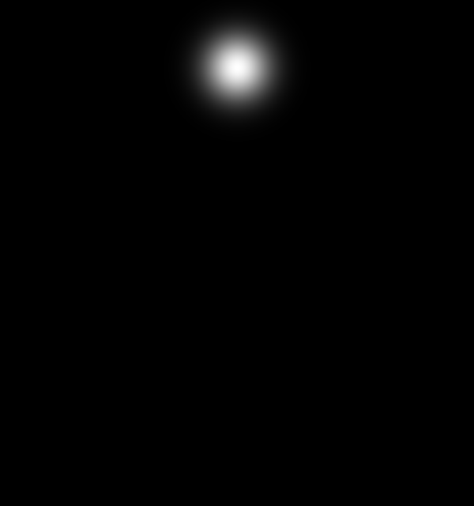
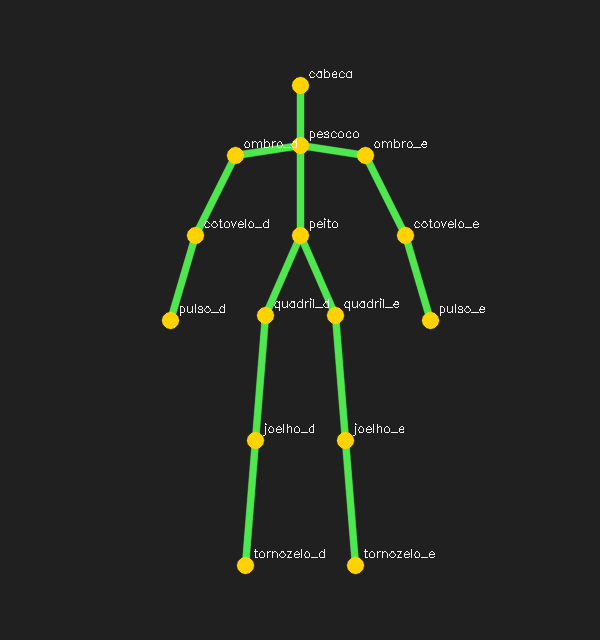

12. Estimativa de pose humana¶
O que você aprenderá¶
Neste capítulo, você aprenderá a representar uma pessoa não apenas por uma caixa, mas por uma estrutura articulada de keypoints anatômicos. Também compreenderá como mapas de calor, confiança, conexões e campos de afinidade transformam pixels em um esqueleto 2D.
Ao final, deverá conseguir:
- diferenciar detecção de pessoa e estimativa de pose;
- compreender keypoints corporais;
- distinguir abordagens top-down e bottom-up;
- interpretar heatmaps;
- localizar máximos com
minMaxLoc; - usar limiares de confiança;
- converter coordenadas do heatmap para a imagem;
- compreender PAFs em alto nível;
- construir esqueletos apenas com pontos válidos;
- calcular ângulos entre três pontos;
- reconhecer limitações de pose 2D;
- compreender ruído temporal e suavização;
- discutir oclusão e pontos ausentes;
- evitar interpretações biomédicas indevidas.
OpenPose popularizou uma abordagem bottom-up com mapas de confiança e Part Affinity Fields para associar partes de múltiplas pessoas (CAO et al., 2021). A estimativa de pose moderna possui diversas arquiteturas, mas heatmaps, confiança e associação continuam sendo conceitos didáticos importantes.
12.1 De uma caixa para uma estrutura articulada¶
Um detector pode devolver:
A pose busca pontos como:
cabeça
ombro esquerdo
ombro direito
cotovelo esquerdo
cotovelo direito
punhos
quadris
joelhos
tornozelos
Analogia: boneco de palitos¶
A caixa é como colocar um retângulo em volta do boneco. A pose tenta localizar as articulações e desenhar os segmentos que formam o esqueleto.
12.2 Keypoint não é certeza absoluta¶
Cada ponto estimado possui incerteza.
Um punho pode ser:
- visível e bem localizado;
- parcialmente oculto;
- fora da imagem;
- confundido com outra parte;
- atribuído à pessoa errada.
Portanto, algoritmos de pose trabalham com escores/confianças, e aplicações críticas precisam validar erros no domínio real.
12.3 Top-down¶
Fluxo:
Vantagens¶
- associação por pessoa simplificada;
- boa precisão individual em muitos cenários.
Limitação¶
O custo cresce com a quantidade de pessoas detectadas.
12.4 Bottom-up¶
Fluxo:
Compartilha computação na imagem inteira, mas precisa resolver qual cotovelo pertence a qual pessoa.
12.5 Heatmap¶
Em vez de prever diretamente apenas uma coordenada, a rede pode produzir uma matriz de confiança por articulação.
Valores altos indicam regiões mais prováveis.
Analogia: mapa meteorológico¶
Um mapa de chuva não informa apenas um ponto; mostra regiões com maior ou menor intensidade. O heatmap faz algo semelhante com a probabilidade/confiança espacial da articulação.
12.6 Heatmap sintético¶
Podemos criar um Gaussiano para estudar a ideia:
import numpy as np
h, w = 64, 64
y, x = np.mgrid[0:h, 0:w]
cx, cy = 40, 25
sigma = 4.0
heatmap = np.exp(
-((x - cx)**2 + (y - cy)**2) /
(2 * sigma**2)
).astype(np.float32)
O máximo fica próximo de (40,25).
12.7 Encontrando o máximo¶
_, confianca, _, ponto = cv2.minMaxLoc(heatmap)
print("Ponto:", ponto)
print("Confiança:", confianca)
ponto vem em (x,y).
12.8 Limiar de confiança¶
Um ponto de baixa confiança não deve ser tratado como medição confiável.
Analogia: prova com resposta ilegível¶
Se a resposta está praticamente apagada, é melhor registrar “incerto” do que inventar uma leitura precisa.
12.9 Coordenadas do heatmap não são necessariamente coordenadas da imagem¶
Se o heatmap mede 46 × 46, mas a imagem mede 640 × 480, precisamos converter.
Se houver resize, crop ou letterbox, a transformação deve reproduzir exatamente a geometria utilizada no pré-processamento.
12.10 Construindo conexões¶
Definimos pares anatômicos:
PARES = [
("ombro_e", "cotovelo_e"),
("cotovelo_e", "punho_e"),
("ombro_d", "cotovelo_d"),
("cotovelo_d", "punho_d"),
]
Antes de desenhar:
for a, b in PARES:
if pontos.get(a) is None:
continue
if pontos.get(b) is None:
continue
cv2.line(
imagem,
pontos[a],
pontos[b],
(0, 255, 0),
2
)
12.11 Por que distância não basta para múltiplas pessoas?¶
Imagine dois cotovelos próximos de dois punhos. O punho mais próximo pode pertencer à outra pessoa.
Precisamos de uma pista de associação estrutural.
12.12 Part Affinity Fields¶
OpenPose usa campos vetoriais que codificam direção e associação provável entre partes (CAO et al., 2021).
Analogia: campo magnético¶
Limalhas de ferro não mostram apenas onde existe o campo; sua orientação mostra uma direção local. Um PAF fornece uma ideia semelhante ao longo do membro.
O algoritmo avalia se a linha entre dois candidatos concorda com o campo vetorial previsto.
12.13 Oclusão¶
Se o punho está atrás do tronco, seu heatmap pode ser fraco ou ambíguo.
Uma aplicação robusta precisa aceitar:
como estado válido.
Não force uma coordenada para cada articulação.
12.14 Calculando ângulo entre três pontos¶
Para um cotovelo:
criamos vetores:
O ângulo é obtido por produto escalar:
Exemplo 1¶
import numpy as np
def angulo(a, b, c):
a = np.array(a, dtype=float)
b = np.array(b, dtype=float)
c = np.array(c, dtype=float)
v1 = a - b
v2 = c - b
n1 = np.linalg.norm(v1)
n2 = np.linalg.norm(v2)
if n1 == 0 or n2 == 0:
return None
cos = np.dot(v1, v2) / (n1 * n2)
cos = np.clip(cos, -1.0, 1.0)
return float(np.degrees(np.arccos(cos)))
12.15 Por que usamos clip no cosseno?¶
Erros numéricos podem produzir algo como:
mas arccos só aceita valores em [-1,1].
evita erro por arredondamento.
12.16 Pose 2D não é geometria 3D completa¶
Um braço apontado diretamente para a câmera parece curto em 2D.
Duas poses 3D diferentes podem produzir projeções 2D parecidas.
Analogia: sombra¶
Uma sombra no chão contém informação sobre forma, mas perde parte da profundidade do objeto que a produziu.
Por isso, ângulos 2D não devem ser tratados automaticamente como medidas biomecânicas 3D exatas.
12.17 Ruído temporal¶
Em vídeo, keypoints podem “tremer” frame a frame.
Uma média móvel simples:
Um filtro exponencial:
Compromisso¶
Mais suavização:
- menos tremor;
- mais atraso.
12.18 Confiança também pode ser filtrada¶
Não basta suavizar coordenadas. Um ponto que desaparece por vários frames talvez precise ser marcado como ausente em vez de arrastado artificialmente pelo filtro.
Uma política possível:
confiança alta → atualiza
confiança média → mantém com cautela
confiança muito baixa por N frames → remove
12.19 Aplicações e responsabilidade¶
Pose pode apoiar:
- interfaces corporais;
- análise esportiva;
- animação;
- ergonomia;
- pesquisa.
Mas um sistema 2D não deve ser vendido como medição médica automática sem validação apropriada.
Erros podem variar com:
- oclusão;
- roupas;
- câmera;
- iluminação;
- população;
- atividade;
- perspectiva.
12.20 Exemplo integrado do capítulo¶
O código do capítulo 12 utiliza heatmaps sintéticos para estudar a geometria sem exigir pesos grandes.
Pipeline:
partes anatômicas
↓
heatmaps gaussianos
↓
minMaxLoc
↓
limiar de confiança
↓
keypoints válidos
↓
conexões
↓
ângulos didáticos
↓
esqueleto final
| Heatmap | Esqueleto |
|---|---|
 |
 |
12.21 Erros comuns¶
| Sintoma | Causa provável | Correção |
|---|---|---|
| keypoints deslocados | escala heatmap→imagem errada | revise transformação |
| linhas ligam pontos inexistentes | ausência não tratada | valide None/confiança |
| esqueletos trocam partes | associação multi-pessoa ruim | PAF/estratégia de associação |
| ângulo explode | vetor de norma zero | trate caso degenerado |
| pose treme muito | ruído temporal | suavização com atraso controlado |
| medição “precisa” mas errada | interpretação 2D como 3D | reconheça perspectiva |
12.22 Perguntas de revisão¶
- Qual diferença existe entre detectar pessoa e estimar pose?
- O que é um heatmap?
- Por que guardar confiança?
- Qual diferença entre top-down e bottom-up?
- Para que servem PAFs?
- Por que distância entre pontos não basta para associar pessoas?
- Como converter coordenadas de heatmap?
- Por que não desenhar segmento quando um extremo está ausente?
- Como calcular ângulo do cotovelo?
- Por que pose 2D não fornece automaticamente ângulo 3D real?
Exercícios de fixação¶
Exercício 1¶
Gere um heatmap Gaussiano e encontre seu máximo com minMaxLoc.
Exercício 2¶
Adicione ruído ao heatmap e observe se o máximo muda.
Exercício 3¶
Crie três heatmaps com confianças máximas diferentes e aplique limiar.
Exercício 4¶
Converta um ponto de heatmap 46 × 46 para uma imagem 640 × 480.
Exercício 5¶
Construa um dicionário de keypoints e desenhe apenas conexões com extremos válidos.
Exercício 6¶
Remova um punho e confirme que o antebraço não é desenhado.
Exercício 7¶
Implemente a função de ângulo e teste configurações de 90°, 180° e aproximadamente 45°.
Exercício 8¶
Adicione ruído aleatório aos keypoints por 100 frames e aplique média móvel.
Exercício 9¶
Compare média móvel de janelas 3, 5 e 15 quanto a estabilidade e atraso.
Exercício 10¶
Implemente filtro exponencial com alpha=0.2, 0.5 e 0.8.
Exercício 11¶
Crie duas pessoas sintéticas com keypoints próximos e explique por que a associação por distância pode falhar.
Exercício 12¶
Escreva uma análise curta das limitações de usar pose 2D para avaliar exercício físico.
Exercício 13¶
Defina critérios mínimos de confiança e visibilidade para aceitar uma medição de ângulo.
Síntese¶
Estimativa de pose combina localização, confiança e estrutura. Heatmaps dizem onde partes podem estar; PAFs ajudam a relacioná-las; limiares evitam transformar incerteza em certeza; e filtros temporais estabilizam vídeo. A principal lição é que um esqueleto estimado é uma inferência visual sujeita a erro, não uma medição física perfeita.
Referências¶
CAO, Zhe et al. OpenPose: realtime multi-person 2D pose estimation using Part Affinity Fields. IEEE Transactions on Pattern Analysis and Machine Intelligence, 2021.
GOODFELLOW, Ian; BENGIO, Yoshua; COURVILLE, Aaron. Deep Learning. Cambridge: MIT Press, 2016.